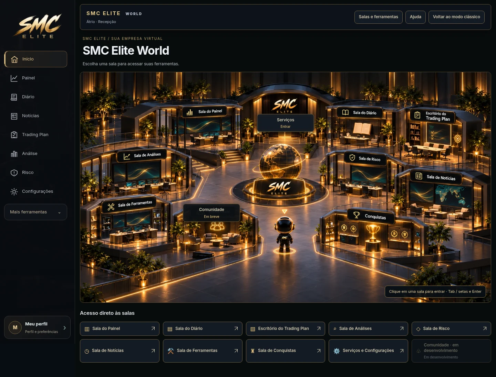
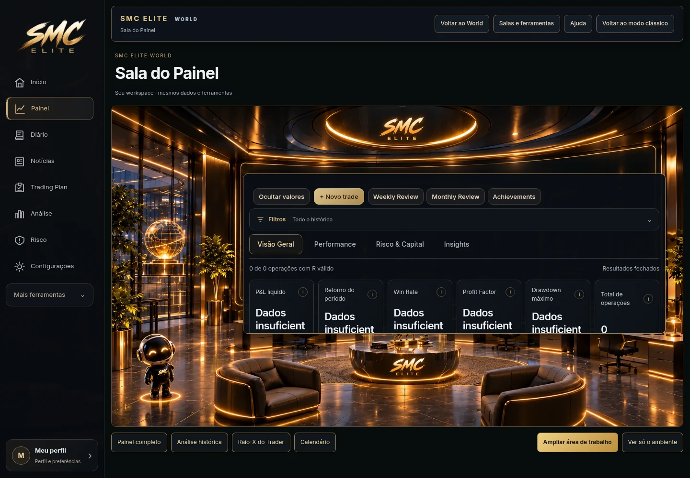
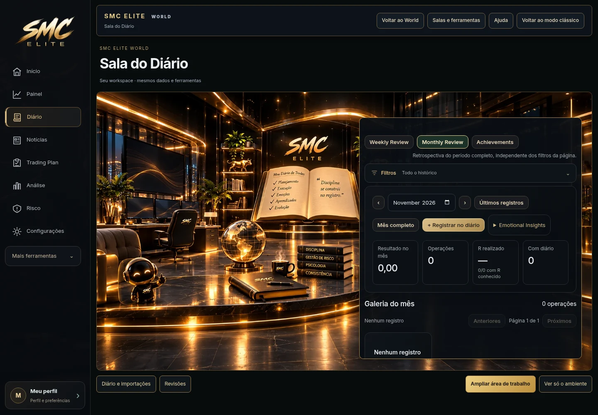
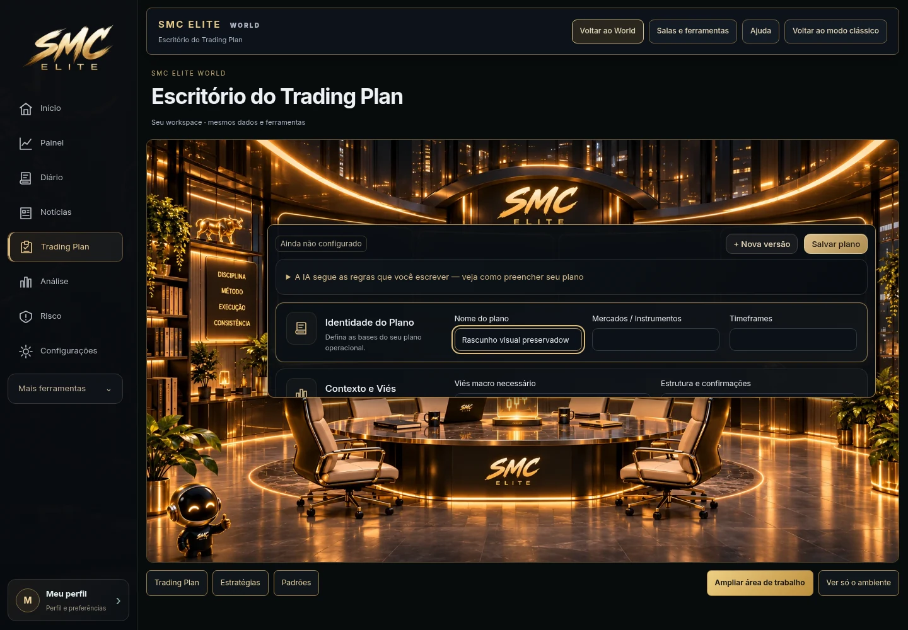
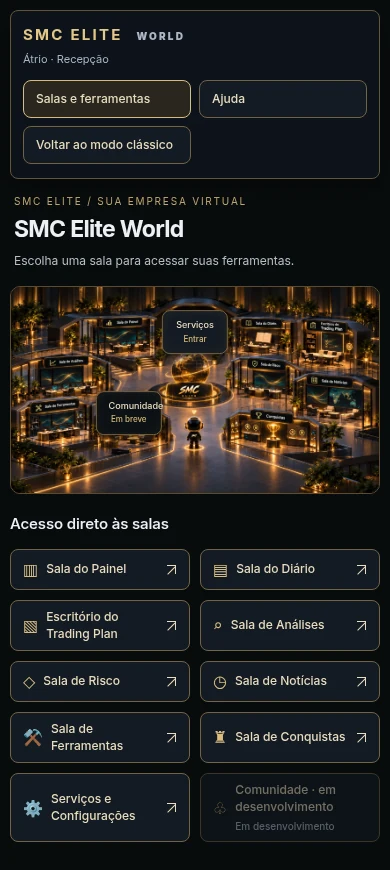
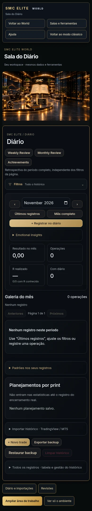

Capturas reais da aplicação em navegador com workspace de teste vazio. Cenários preparados a partir das referências; as ferramentas sobrepostas são as views existentes. O personagem permanece no cenário e a navegação é por clique.





